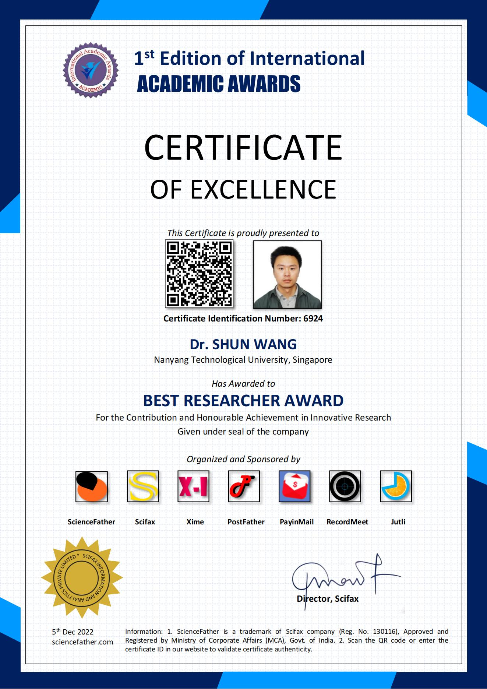
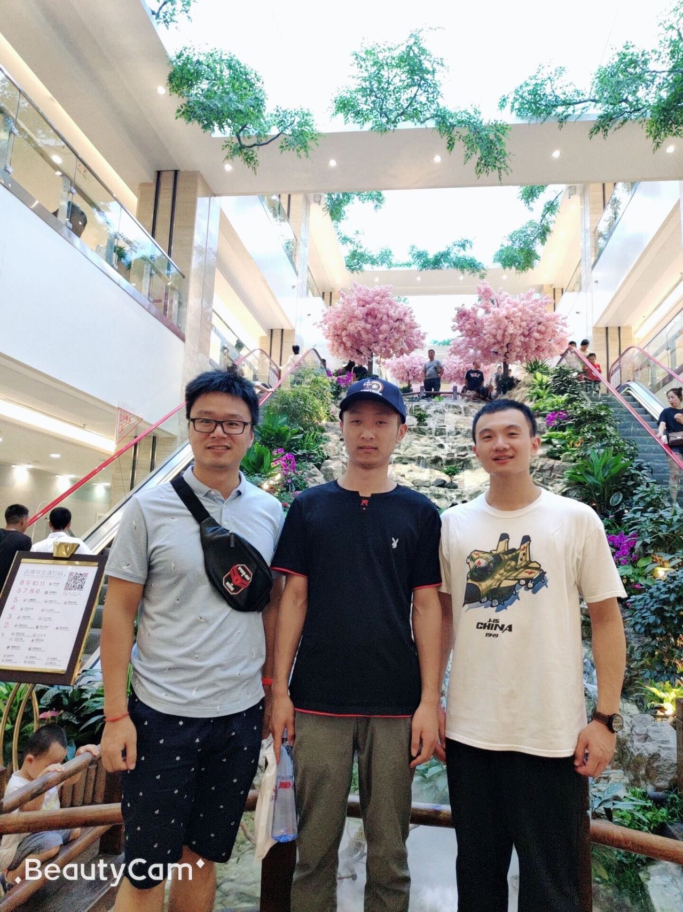
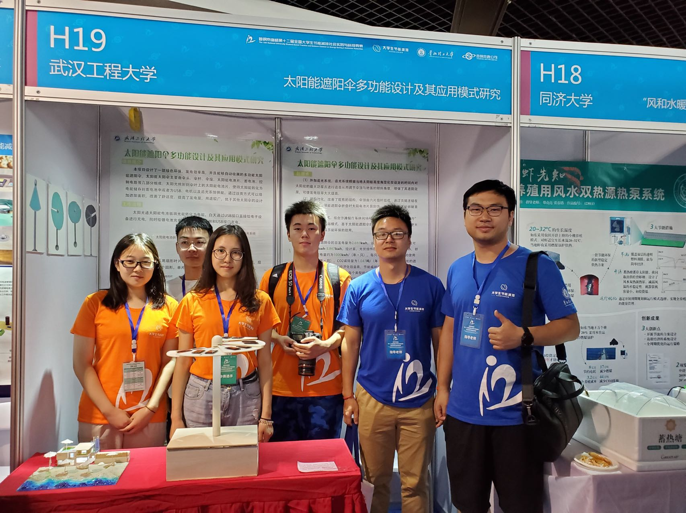

王顺老师荣获2022年国际学术“最佳研究者奖”
2022-01-03
近日, 王顺老师在高精度光纤传感技术领域取得重要研究进展, 经专家提名和评审委员会多轮评审, 荣获国际学术组织Sciencefather颁发的2022年国际学术“最佳研究者奖”(Best Researcher Award)。据悉，该奖需主要授予在创新研究方面做出贡献和取得成就的学者。
近年来，王顺研究小组在光纤传感技术及其结构健康监测应用领域取得了一系列研究成果，学术论文分别在Optics Express, IEEE Transactions on Instrumentation and Measurement, IEEE Sensors Journal等国际知名期刊上发表。截止目前，论文总被引达932次，受到了国际学术界高度关注，产生了良好的国际影响力，王顺老师为此受邀担任多家国际期刊审稿人和学术编辑。 Read more

研究小组赴西安参加SOPO2019会议并作口头报告
2019-08-19
光学与光电子国际学术会议是由武汉大学、北京邮电大学、信息光子学与光通信国家重点实验室、 聊城大学等高校及科研单位共同协办，在领域内享受盛名的国际学术研讨会之一。多年来， 已在武汉、成都、苏州、上海、北京、三亚、西安、桂林、昆明等城市成功举办十一届。 第十二届光学与光电子国际学术会议于2019年8月17-19日在世界著名的旅游城市西安举行, 王顺老师受邀带队参会，小组成员在会上作了口头报告。
Read more

王顺老师指导本科生团队获第十二届大学生节能减排社会实践与科技竞赛全国二等奖
2019-08-10
8月7日至10日, 第十二届全国大学生节能减排社会实践与科技竞赛决赛在华北理工大学举行。本次大赛也是我校参赛以来首次有项目入围最后的决赛，经过三天的激烈角逐，我校学生表现出色，成功斩获一等奖两项、二等奖一项、三等奖三项的好成绩，学校荣获校级优秀组织奖，总体成绩位居湖北省高校第三，创造了我校在该项赛事中的历史最佳纪录。光能数理学院王顺老师指导的《太阳能遮阳伞多功能设计及其应用模式研究》项目获大赛二等奖。
Read more